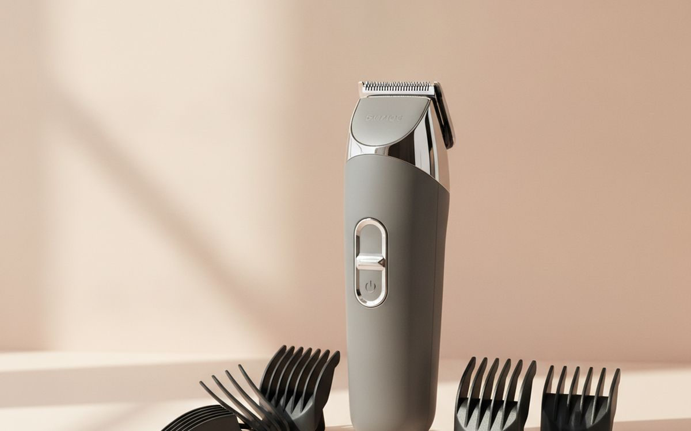
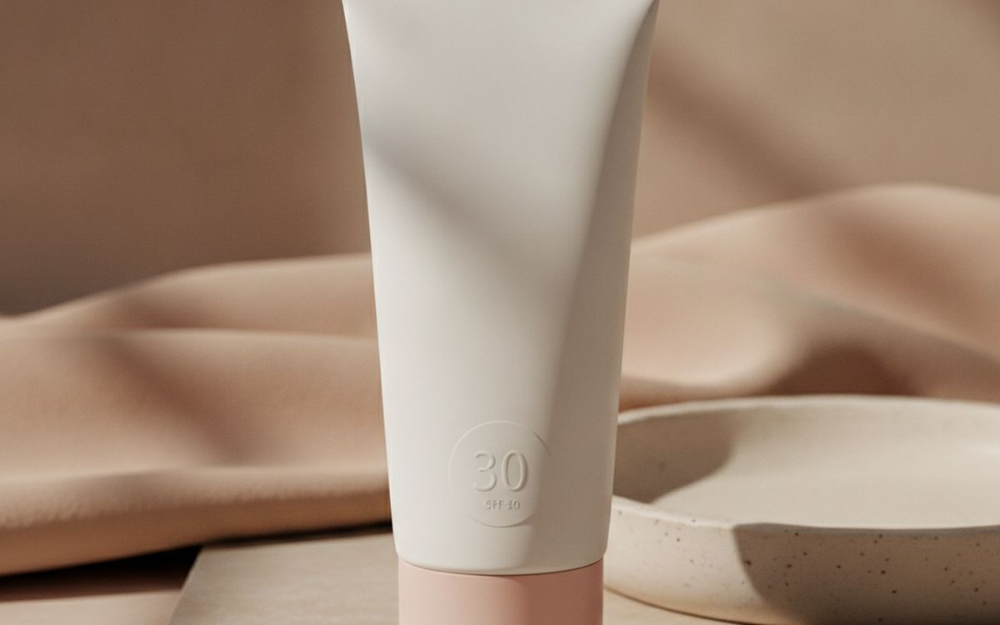
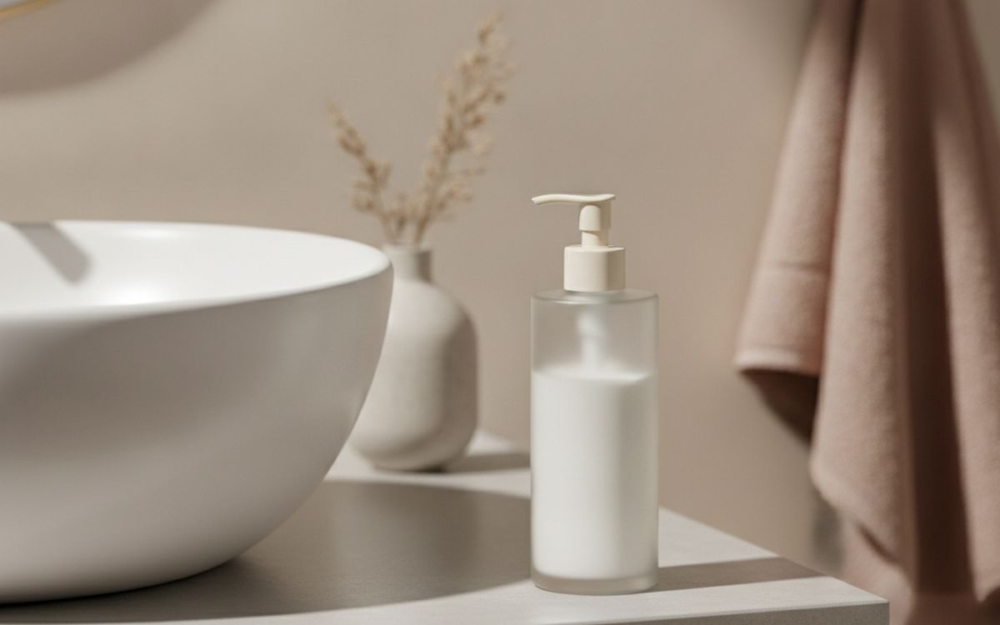
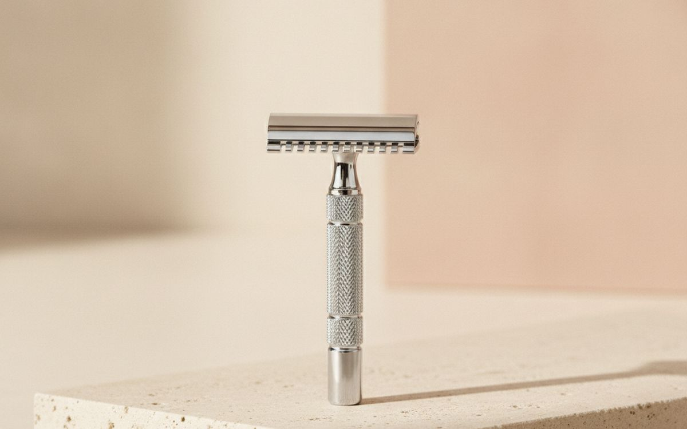
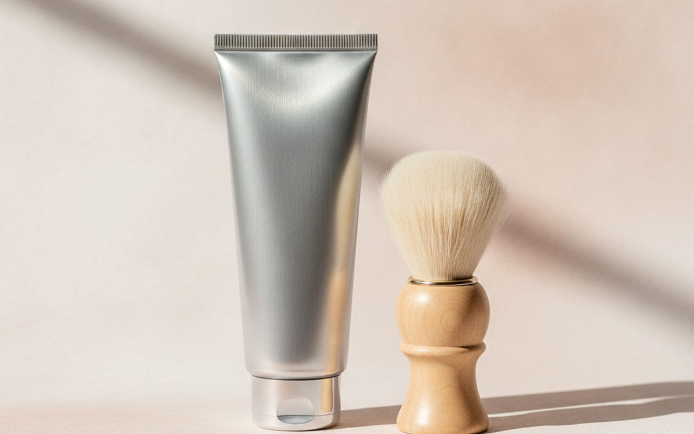
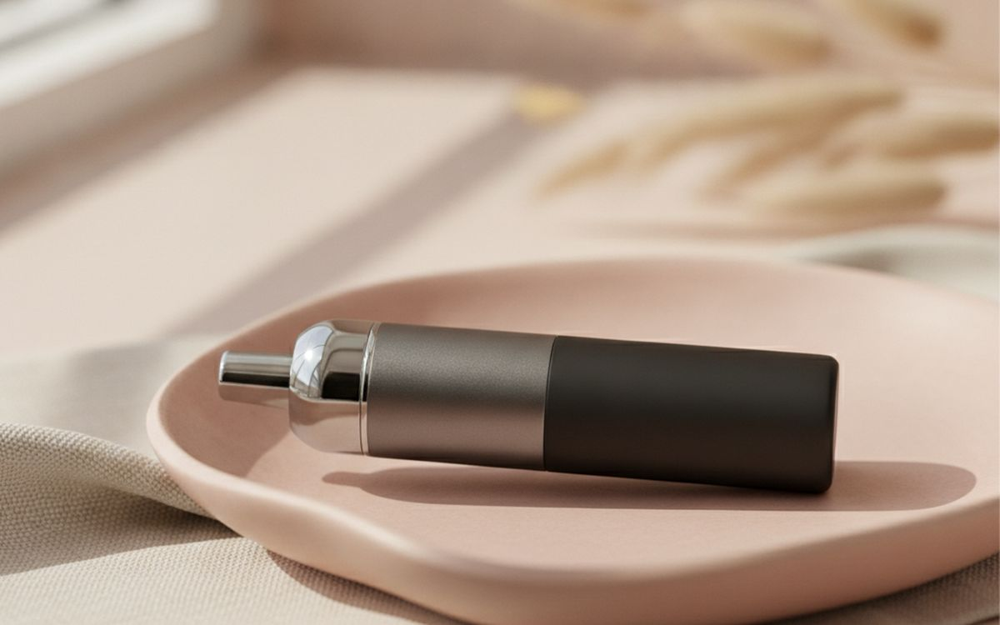
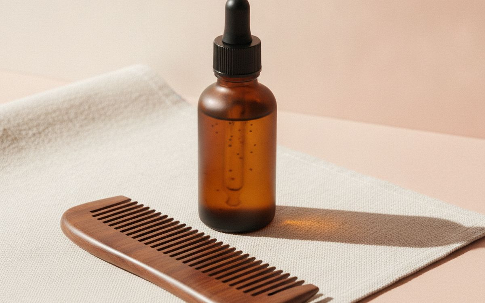
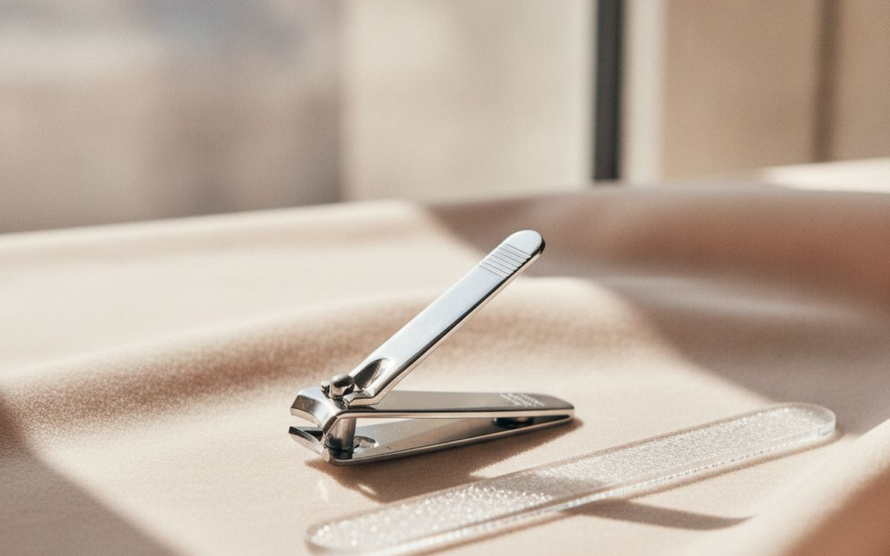
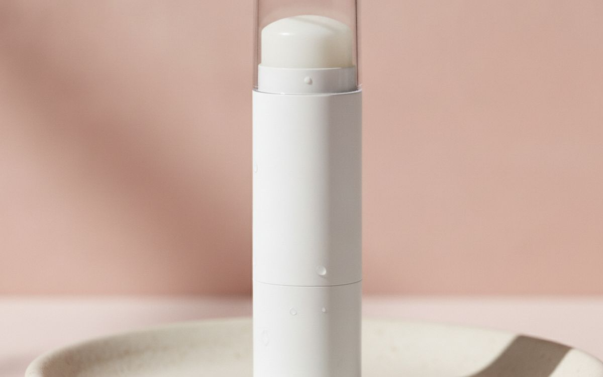
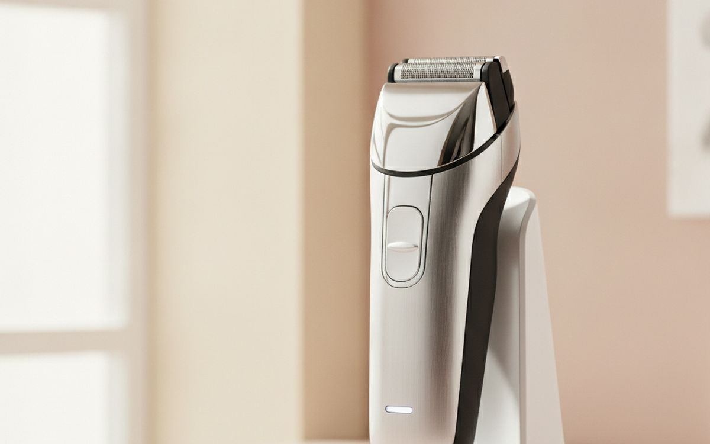

Men's grooming marketing sells complicated routines, multi-blade razors with ten blades and products for problems nobody had. What most men actually need is short: a good trimmer or razor, a gentle face wash, a moisturiser with sunscreen, and a few tools that stop small problems like ingrown hairs and dry skin.
This list is ordered by how much each item changes your day-to-day look and comfort. Most of it lasts years or costs little to refill.
Prices below are approximate street prices at the time of writing and move around constantly, especially during sale events. Treat them as a rough band for budgeting, not a quote. Always check the live listing before you buy.
The short version
A cordless beard and body trimmer with guards
The tool most men use most
Disclosure. The links on this page are affiliate links. If you buy through one we may earn a commission at no extra cost to you. It does not affect what makes this list or the order it is in.
How we picked
These picks come from dermatologist guidance, barber advice, published trimmer and razor testing and long-run owner reports, cross-checked against current retail listings. We have not personally tested every item here. Counterfeit grooming electronics are common on marketplaces; buy from official stores.
At a glance
Prices are approximate at the time of writing and change often.
The picks

01 · The tool most men use mostA cordless beard and body trimmer with guards
Whether you keep stubble, a full beard or just tidy up before a haircut, a good trimmer is used several times a week. Look for sharp stainless or titanium blades, several guard lengths, a long battery life and a washable head. Philips, Braun and Wahl are the reliable names. Multi-groom kits handle beard, body and hair. Cheaper no-name trimmers pull hairs and die within a year. The case for it: handles most grooming jobs, precise length control, and lasts years. The trade-off is real: guards can pop off mid-trim on cheap models and clean after each use, so weigh that against how often it would actually get used.
$40-90Trade-off: Guards can pop off mid-trim on cheap models
Why it is here
- Handles most grooming jobs
- Precise length control
- Lasts years
Worth knowing
- Guards can pop off mid-trim on cheap models
- Clean after each use

02 · Skin protectionA daily moisturiser with SPF 30
Sun damage is the main cause of skin ageing and a skin cancer risk. A daily moisturiser with broad-spectrum SPF 30 protects and hydrates in one step, which makes it a habit you will keep. Choose a light, non-greasy formula. If you only buy one skincare product, buy this. The case for it: protects from sun damage, hydrates, and one easy step. The trade-off is real: some leave a slight white cast and reapply outdoors, so weigh that against how often it would actually get used. For $12-25, it is a small, low-risk addition to the list rather than a centrepiece purchase you need to think hard about.
$12-25Trade-off: Some leave a slight white cast
Why it is here
- Protects from sun damage
- Hydrates
- One easy step
Worth knowing
- Some leave a slight white cast
- Reapply outdoors

03 · Clean, calm skinA gentle face wash
Bar soap strips skin and can leave it dry and tight. A gentle, fragrance-free face wash cleans without irritation. CeraVe, Cetaphil and similar brands are affordable dermatologist favourites. Once a day in the evening is enough for most people. The case for it: cleans without drying, suits sensitive skin, and cheap. The trade-off is real: less "clean" feeling than harsh soaps and scrubs are not needed daily, so weigh that against how often it would actually get used. Priced around $8-15, it is easy to justify even if it only ends up getting occasional rather than daily use.
$8-15Trade-off: Less "clean" feeling than harsh soaps
Why it is here
- Cleans without drying
- Suits sensitive skin
- Cheap
Worth knowing
- Less "clean" feeling than harsh soaps
- Scrubs are not needed daily

04 · Close, comfortable shavesA safety razor or quality cartridge razor
Safety razors use a single cheap blade and cause less irritation for many men, especially those with ingrown hairs, because they cut without pulling. They take a week or two to learn. Quality cartridge razors are easier from day one. Either way, shave with the grain and replace blades often. The case for it: close shave, less irritation for many, and cheap blades. The trade-off is real: safety razors have a learning curve and blades are a travel issue in carry-on, so weigh that against how often it would actually get used.
$20-50Trade-off: Safety razors have a learning curve
Why it is here
- Close shave
- Less irritation for many
- Cheap blades
Worth knowing
- Safety razors have a learning curve
- Blades are a travel issue in carry-on

05 · Less irritationA shaving cream or gel for sensitive skin
Shaving cream helps the razor glide and protects the skin. Choose a fragrance-free formula for sensitive skin. A shaving brush builds a richer lather and lifts hairs, but is optional. The case for it: smoother shave, less irritation, and cheap. The trade-off is real: fragrances can irritate and cans are bulky for travel, so weigh that against how often it would actually get used. For $8-15, it is a small, low-risk addition to the list rather than a centrepiece purchase you need to think hard about. It is a minor purchase in the context of the whole set-up, but the kind that is easy to regret skipping once you notice the gap.
$8-15Trade-off: Fragrances can irritate
Why it is here
- Smoother shave
- Less irritation
- Cheap
Worth knowing
- Fragrances can irritate
- Cans are bulky for travel

06 · Quick tidy-upsA nose and ear hair trimmer
Nose and ear hair gets more noticeable with age. A small rotary trimmer handles it safely in seconds. Look for a washable head and a battery that lasts. It is one of those small tools that makes a big difference to looking tidy. The case for it: quick and safe, small, and cheap. The trade-off is real: cheap ones pull hairs and clean after each use, so weigh that against how often it would actually get used. Priced around $15-30, it is easy to justify even if it only ends up getting occasional rather than daily use.
$15-30Trade-off: Cheap ones pull hairs
Worth knowing
- Cheap ones pull hairs
- Clean after each use

07 · Softer beards, less itchA beard oil or balm
New beards itch, and longer beards get dry and wiry. A few drops of beard oil soften the hair and moisturise the skin underneath. Balm adds hold for longer beards. Choose light or unscented oils if you dislike strong smells. The case for it: reduces beard itch, softer beard, and healthier skin underneath. The trade-off is real: strong scents can clash with cologne and too much looks greasy, so weigh that against how often it would actually get used. At $10-20, it earns its place on this list without asking for a big up-front commitment either way.
$10-20Trade-off: Strong scents can clash with cologne
Why it is here
- Reduces beard itch
- Softer beard
- Healthier skin underneath
Worth knowing
- Strong scents can clash with cologne
- Too much looks greasy

08 · Neat handsNail clippers and a file
Sharp, sturdy nail clippers cut cleanly without splitting nails. Cheap clippers go dull and crush. A glass file smooths edges. Small tools, but people notice hands. The case for it: clean cuts, lasts years, and small. The trade-off is real: good clippers cost more and glass files can break, so weigh that against how often it would actually get used. For $10-20, it is a small, low-risk addition to the list rather than a centrepiece purchase you need to think hard about. It is a minor purchase in the context of the whole set-up, but the kind that is easy to regret skipping once you notice the gap.
$10-20Trade-off: Good clippers cost more
Why it is here
- Clean cuts
- Lasts years
- Small
Worth knowing
- Good clippers cost more
- Glass files can break

09 · Chapped lipsLip balm with SPF
Lips burn and chap easily, especially in winter and outdoors. An unscented balm with SPF protects and moisturises. Keep one in a pocket and one by the bed. The case for it: prevents chapping, sun protection, and cheap. The trade-off is real: easy to lose and melts in hot cars, so weigh that against how often it would actually get used. Priced around $4-8, it is easy to justify even if it only ends up getting occasional rather than daily use. None of that makes it essential for everyone reading this, only worth knowing about if the description above matches how you actually use the space.
$4-8Trade-off: Easy to lose
Why it is here
- Prevents chapping
- Sun protection
- Cheap
Worth knowing
- Easy to lose
- Melts in hot cars

10 · Fast daily shavingAn electric foil shaver
For men who shave every day and are short on time, an electric foil shaver is fast, can be used dry and causes less nicking. It does not shave quite as close as a blade. Replace the foil and cutters every year or two. The case for it: fast, fewer cuts, and can be used dry. The trade-off is real: not as close as a blade and replacement heads add cost, so weigh that against how often it would actually get used. At $60-150, it earns its place on this list without asking for a big up-front commitment either way.
$60-150Trade-off: Not as close as a blade
Why it is here
- Fast
- Fewer cuts
- Can be used dry
Worth knowing
- Not as close as a blade
- Replacement heads add cost
Common questions
What grooming products do men actually need?
A trimmer or razor, a gentle face wash, a moisturiser with SPF and lip balm. Everything else is optional.
How do I avoid razor bumps?
Shave with the grain, use a sharp blade and a gentle cream, and consider a safety razor or trimmer instead.
Is beard oil necessary?
It helps with itch and dryness, especially for new or long beards.
Electric shaver or razor?
Electric for speed and fewer cuts; razor for the closest shave.
Today's deals
See what is discounted right now.
Deals →← All guides
As an AliExpress affiliate we earn from qualifying purchases. Prices and availability are accurate as of the date of publication and may change.